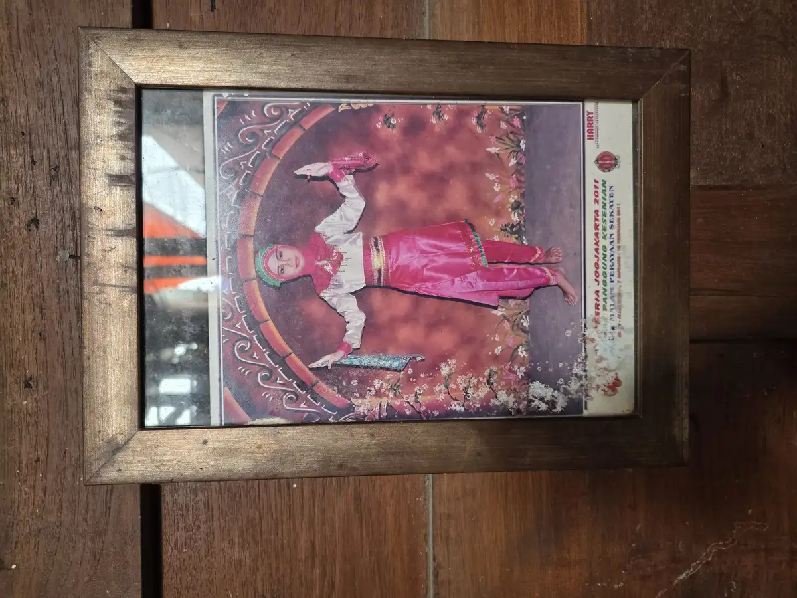

Terapi fisik untuk anak terlambat jalan dapat membantu ketika kemampuan berdiri, menjaga keseimbangan, atau melangkah belum berkembang sesuai harapan. Sebagai orang tua, saya mungkin cemas melihat anak sebaya sudah berjalan. Namun saya tidak perlu menebak diagnosis atau memaksakan latihan. Langkah yang lebih aman adalah mencatat kemampuan anak, berkonsultasi dengan dokter, lalu mengikuti asesmen fisioterapis bila direkomendasikan.
Artikel ini menjelaskan patokan perkembangan sebagai alat pemantauan, bukan perlombaan. Saya juga akan memahami apa yang dinilai profesional, seperti apa latihan yang bertanggung jawab, dan kapan pertolongan perlu dicari segera. Informasi ini bersifat edukasi dan tidak menggantikan pemeriksaan langsung.

Daftar Isi
- Memahami Terlambat Berjalan Tanpa Terburu-buru Mendiagnosis
- Tanda yang Perlu Dinilai Dokter atau Fisioterapis
- Proses Asesmen dan Tujuan Terapi Fisik
- Contoh Latihan di Rumah yang Aman
- Keamanan, Alat Bantu, dan Hal yang Perlu Dihindari
- Memantau Kemajuan dan Berkolaborasi
- FAQ Terapi Fisik Anak Terlambat Jalan
Memahami Terlambat Berjalan Tanpa Terburu-buru Mendiagnosis
Berjalan mandiri merupakan satu bagian perkembangan motorik kasar. Sebelumnya anak membangun kontrol kepala dan badan, duduk, berpindah posisi, menumpu berat badan, berdiri, serta merambat. Urutan dan waktunya dapat bervariasi. Ada anak yang merangkak, ada pula yang bergerak dengan cara lain. Karena itu, satu perbedaan waktu belum menjelaskan penyebabnya.
CDC mencantumkan berjalan tanpa berpegangan sebagai kemampuan yang dilakukan sebagian besar anak pada usia 18 bulan. Daftar tonggak CDC menggambarkan hal yang dilakukan sedikitnya 75 persen anak pada usia tersebut. Ini berguna untuk pemantauan, tetapi bukan instrumen diagnosis. Jika kemampuan belum muncul, CDC menyarankan orang tua berbicara dengan dokter dan meminta skrining perkembangan.
Penyebabnya beragam. Anak mungkin memiliki variasi perkembangan, riwayat lahir prematur, kesempatan bergerak yang terbatas, perbedaan tonus atau kekuatan otot, masalah tulang dan sendi, kondisi saraf, atau keterlambatan pada beberapa area perkembangan. Dokter perlu melihat riwayat kehamilan dan kelahiran, kesehatan dan pertumbuhan, nutrisi, penglihatan, pendengaran, serta keterampilan komunikasi dan sosial. Saya sebaiknya tidak menyimpulkan cerebral palsy, autisme, atau kondisi lain hanya dari keterlambatan berjalan.
Jika anak lahir prematur, saya perlu memberi tahu usia kehamilan saat lahir karena profesional mungkin memakai usia koreksi pada periode awal. Saya dapat membawa catatan kapan anak mulai duduk, berpindah tempat, berdiri, dan merambat. Video pendek gerakan alami di rumah juga bisa membantu, selama privasi anak dijaga.
Tanda yang Perlu Dinilai Dokter atau Fisioterapis
Saya sebaiknya membuat janji pemeriksaan bila anak berusia 18 bulan belum berjalan mandiri, belum mencoba berdiri atau melangkah tanpa dukungan, atau saya merasa geraknya berbeda. American Academy of Pediatrics menyebut kesulitan berdiri atau berjalan, otot yang tampak sangat kaku atau lemas, masalah keseimbangan, dan pola jalan tidak biasa sebagai tanda kemungkinan keterlambatan motorik kasar.
Penilaian lebih cepat dibutuhkan bila anak kehilangan kemampuan yang sebelumnya sudah dikuasai, hanya memakai satu sisi tubuh, selalu jatuh ke sisi yang sama, menolak menumpu kaki, atau mengalami nyeri menetap. Panduan fisioterapi anak dari Bedfordshire Hospitals NHS Foundation Trust juga menempatkan regresi, asimetri, tonus terlalu rendah atau tinggi, nyeri malam, dan kekakuan pagi sebagai tanda bahaya.
Saya juga perlu menyampaikan bila keterlambatan berjalan disertai kesulitan makan, komunikasi, interaksi, atau penggunaan tangan. Dokter dapat menentukan apakah anak memerlukan evaluasi tumbuh kembang, neurologi, ortopedi, gizi, pemeriksaan pendengaran, atau layanan lain. Fisioterapi adalah bagian dari tim, bukan pengganti evaluasi medis.
Proses Asesmen dan Tujuan Terapi Fisik
Pada pertemuan awal, fisioterapis anak akan bertanya tentang kemampuan, kondisi kesehatan, rutinitas, lingkungan, dan kekhawatiran keluarga. Pengamatan dapat mencakup cara anak bangun dari lantai, duduk dan berdiri, berpindah di antara perabot, menjaga postur, menumpu kaki, serta merespons permainan. Kekuatan, rentang gerak, tonus, koordinasi, keseimbangan, dan pola gerak juga dapat dinilai sesuai usia.
Asesmen seharusnya ramah anak dan tidak hanya mencari kekurangan. Fisioterapis perlu melihat minat, cara komunikasi, aktivitas yang sudah mampu dilakukan, dan dukungan yang tersedia. WHO menjelaskan rehabilitasi sebagai upaya mengoptimalkan fungsi dan mengurangi dampak kondisi kesehatan pada kehidupan sehari-hari. Jadi tujuan terapi bukan membuat gerak terlihat sempurna, melainkan membantu partisipasi yang aman dan bermakna.
Tujuan sebaiknya spesifik. Contohnya, anak mampu bangun dari bangku dengan bantuan lebih sedikit, berdiri untuk meraih mainan, berpindah tiga langkah di antara dua permukaan stabil, atau berjalan dari kamar ke ruang keluarga dengan aman. Target dipilih bersama keluarga dan ditinjau berkala. Tidak ada fisioterapis yang bertanggung jawab dapat menjamin anak pasti berjalan dalam jumlah sesi tertentu.
Program bisa berisi permainan untuk perpindahan posisi, penguatan fungsional, keseimbangan, koordinasi, latihan berjalan, penyesuaian lingkungan, serta edukasi pengasuh. Bila anak juga kesulitan beraktivitas sehari-hari, tim mungkin menyarankan terapi okupasi. Untuk gambaran lebih luas tentang mobilitas pada ABK, saya dapat membaca panduan terapi fisik bagi ABK.
Contoh Latihan di Rumah yang Aman
Latihan rumah harus berasal dari hasil asesmen. Contoh berikut bukan resep untuk semua anak. Saya perlu meminta fisioterapis memperagakan posisi tangan, tingkat bantuan, jumlah pengulangan, dan tanda berhenti. Aktivitas sebaiknya masuk ke permainan singkat agar anak punya kesempatan memilih dan tidak merasa diuji.
- Bermain dari duduk ke berdiri. Tempatkan mainan pada permukaan stabil setinggi dada. Anak berlatih berdiri dari bangku yang sesuai, dengan bantuan hanya sebanyak yang diperlukan.
- Merambat di perabot stabil. Letakkan dua benda menarik pada jarak dekat di sepanjang sofa yang tidak dapat bergeser. Dampingi dari sisi anak, bukan menarik lengannya ke atas.
- Berpindah antartumpuan. Dua permukaan kokoh diletakkan sangat dekat agar anak memutar badan dan memindahkan tangan. Jarak ditambah hanya atas arahan profesional.
- Meraih dalam posisi berdiri. Anak mengambil mainan pada arah berbeda sambil berpegangan. Aktivitas ini melatih pemindahan berat badan dan keseimbangan.
- Mendorong benda stabil. Jika sudah disetujui fisioterapis, alat dorong yang berat dan tidak mudah terguling dapat dipakai di lantai rata dengan pengawasan dekat.
Sebelum bermain, saya membersihkan lantai dari kabel, benda kecil, karpet lepas, dan sudut tajam. Perabot harus terkunci atau cukup berat. Saya berada dalam jangkauan, tetapi memberi waktu anak mencoba. Pujian diarahkan pada usaha, bukan hanya hasil. Berhenti jika anak menangis terus, tampak takut, mengalami nyeri, sesak, perubahan warna kulit, pusing, atau kelelahan yang tidak biasa.
Durasi tidak perlu panjang. Beberapa kesempatan singkat dalam rutinitas sering lebih mudah diterima daripada satu sesi yang melelahkan. Aktivitas dapat disisipkan ketika mengambil mainan atau berpindah menuju pengasuh. Saya tidak melakukan peregangan paksa, memasang beban di kaki, atau menarik kedua lengan anak untuk membuat langkah.
Keamanan, Alat Bantu, dan Hal yang Perlu Dihindari
Keamanan lebih penting daripada mengejar usia target. American Academy of Pediatrics tidak menganjurkan baby walker beroda. Alat tersebut tidak mengajarkan berjalan dan dapat membawa anak ke tangga, benda panas, atau area berbahaya dengan cepat. Push walker bukan otomatis aman untuk semua anak. Stabilitas, tinggi pegangan, kemampuan mengendalikan alat, dan permukaan lantai harus dinilai.
Sepatu juga bukan terapi utama. Untuk bermain di dalam rumah, fisioterapis dapat menilai apakah telanjang kaki pada permukaan bersih dan tidak licin memberi umpan balik yang baik, atau apakah kondisi tertentu membutuhkan alas kaki maupun ortosis. Saya tidak membeli brace, sepatu korektif, atau alat berdiri berdasarkan iklan. Alat yang salah ukuran dapat menimbulkan tekanan, mengubah pola gerak, dan menghambat aktivitas.
Saya perlu waspada terhadap layanan yang menjanjikan hasil pasti, menyalahkan pola asuh, memberi diagnosis tanpa pemeriksaan, atau menjual paket panjang sebelum asesmen. Profesional yang baik menjelaskan alasan tiap latihan, risiko, pilihan alternatif, cara mengukur hasil, dan kapan perlu merujuk kembali ke dokter. Anak berhak berhenti dan beristirahat. Nyeri bukan tanda bahwa terapi sedang berhasil.
Aktivitas fisik dan bermain tetap penting, tetapi harus sesuai kemampuan. Saya dapat mempelajari dasar perkembangan motorik kasar dan dukungan untuk anak berkebutuhan khusus tanpa membandingkan anak. Informasi daring membantu menyiapkan pertanyaan, bukan menggantikan keputusan klinis.
Memantau Kemajuan dan Berkolaborasi
Kemajuan tidak hanya berarti langkah pertama. Saya dapat mencatat kestabilan duduk, kemampuan bangun, lama berdiri, jarak merambat, tingkat bantuan, frekuensi jatuh, kenyamanan, dan kemauan ikut bermain. Gunakan kondisi yang relatif sama agar perbandingan lebih adil. Catatan singkat seperti “berdiri dari bangku tiga kali dengan bantuan satu tangan” lebih berguna daripada “hari ini lebih bagus”.
Saya membawa catatan ke evaluasi dan menanyakan apakah target masih relevan. Bila kemampuan menetap, menurun, atau latihan selalu memicu penolakan, tim perlu meninjau penyebab, dosis latihan, kesehatan, dan lingkungan. Fisioterapis, dokter, orang tua, serta guru dapat menyepakati satu atau dua strategi yang konsisten. Di sekolah, dukungan dapat berupa jalur bebas hambatan, kursi sesuai ukuran, waktu transisi lebih panjang, atau bantuan aman saat berpindah.
Perkembangan anak tidak selalu linear. Sakit, kurang tidur, perubahan rutinitas, atau pertumbuhan dapat memengaruhi performa. Saya membandingkan anak dengan titik awalnya sendiri dan menghargai usaha kecil. Dukungan pada komunikasi, bermain, dan kemandirian sama pentingnya dengan berjalan. Artikel tentang peran orang tua dalam pendidikan inklusi dapat membantu menjaga kolaborasi tetap berpusat pada anak.
Kesimpulannya, pemeriksaan lebih awal memberi keluarga arah yang lebih jelas tanpa menempelkan label secara terburu-buru. Terapi fisik yang baik berangkat dari asesmen, tujuan fungsional, latihan aman, dan evaluasi bersama. Jika saya khawatir tentang perkembangan berjalan anak, saya akan menghubungi dokter anak atau layanan tumbuh kembang terlebih dahulu, lalu menjalankan latihan rumah yang memang direkomendasikan.
FAQ Terapi Fisik Anak Terlambat Jalan
1. Pada usia berapa anak yang belum berjalan perlu diperiksa?
Jika pada usia 18 bulan anak belum berjalan mandiri, saya sebaiknya membicarakannya dengan dokter dan meminta skrining perkembangan. Pemeriksaan dilakukan lebih awal bila ada kehilangan kemampuan, asimetri, nyeri, atau tubuh sangat kaku maupun lemas.
2. Apakah terlambat berjalan selalu berarti anak memiliki kelainan?
Tidak. Waktu perkembangan bervariasi dan satu tonggak tidak menentukan diagnosis. Keterlambatan tetap perlu dinilai bersama riwayat kesehatan, pola gerak, kemampuan lain, dan pemeriksaan profesional.
3. Apa yang dilakukan fisioterapis untuk anak terlambat berjalan?
Fisioterapis menilai postur, kekuatan, tonus, keseimbangan, koordinasi, perpindahan, dan lingkungan. Hasilnya digunakan untuk menyusun tujuan fungsional, aktivitas bermain, edukasi keluarga, dan evaluasi berkala.
4. Berapa lama terapi sampai anak bisa berjalan?
Tidak ada durasi yang berlaku untuk semua anak. Penyebab, kesehatan, kemampuan awal, kesempatan berlatih, dan respons berbeda. Program dievaluasi berkala tanpa janji hasil atau tenggat tertentu.
5. Bolehkah latihan berjalan dilakukan setiap hari di rumah?
Boleh jika dinilai aman dan diajarkan profesional. Latihan dibuat singkat, menyenangkan, dan mengikuti toleransi. Saya menghentikannya bila muncul nyeri, sesak, pusing, atau lelah tidak biasa.
6. Apakah baby walker membantu anak lebih cepat berjalan?
Tidak dianjurkan. AAP menyatakan baby walker beroda tidak mengajarkan berjalan dan dapat menyebabkan cedera serius. Saya akan bertanya kepada profesional mengenai alternatif yang stabil.
7. Apa perbedaan fisioterapi dan terapi okupasi untuk anak?
Fisioterapi terutama mendukung gerak, postur, keseimbangan, kekuatan, dan mobilitas. Terapi okupasi mendukung partisipasi dalam bermain, makan, berpakaian, dan belajar. Keduanya dapat berkolaborasi.
Bacaan Terkait
Sumber Resmi dan Referensi Medis
- CDC: Milestones by 18 Months
- American Academy of Pediatrics: Physical Development
- World Health Organization: Rehabilitation
- NHS: Paediatric Physiotherapy Referral Guidance
- American Academy of Pediatrics: Movement Milestones and Walker Safety
Disclaimer medis: Artikel ini untuk edukasi umum, bukan diagnosis atau pengganti konsultasi. Kebutuhan terapi, alat bantu, serta latihan harus ditentukan oleh dokter dan fisioterapis anak berdasarkan pemeriksaan langsung.